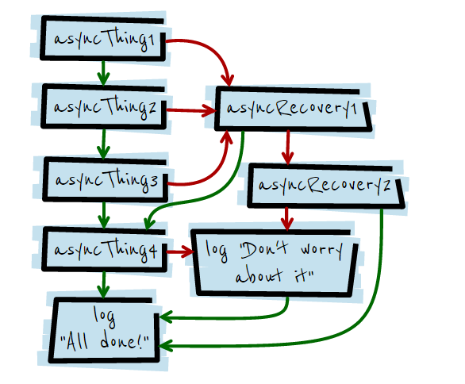

Advanced JS
Debugging
goo.gl/mfKvWP
www.thatJSDude.com / @mdkhan005
(youtube.com/user/khanLearning)
morning of a developer


feedback
- show use cases and follow a path wherejokes would be related
- want focused on the story
- talked into summary but not discussed before
- another way to solve jqury events is el.data and events
- justin meyer likes to find out where a property of an object has been added
- events demo didnt work
- unmonitor events didnt worked
- web developer extension: should pick 5 coolest and show them other than just randomly talking about all the features
- overall talk should pick some cool part rather touching everything
- DOM breakpoints want showed
New links with old stuff
- finding memory leak in 3 steps XHR replay, color picker, drag and drop element
- remy sharp about xml http request
- addy osmani: search jquery uk talk
- style oriented
- extract all css
console
console - summary
- console.table()
- optional column
- preserve log
- count
console - summary
Source
dev tools tipssource - summary
- Open File (Ctrl+P)
- Search (Ctrl+F)
- Search All (Ctrl + shift + F)
- Filter Function (Ctrl + shift + O)
- Goto a line (Ctrl + G)
- Matching Bracket (Ctrl + M)
- Next selection (Ctrl + D)
sources - summary
Put Break points
console.trace()
- debugger;
- debug(), undebug()
Live Edits - summary
- multiple cursor (ctrl + click)
- column selection (alt + drag)
- local modification
Left side
- drag a file to editor
- add work space
- add, edit, delete files
- local modifications
set workspace
authoring-development-workflow
right Side
- Deactivate all breakpoints
- pause on error
- watch expression
- call stack
- scope variable
- breakpoints
- Dom breakpoints (know about it)
- XHR breakpoints
- Event Listener breakpoints
Drag image
Day of a programmer
time wasted at work


snippet
My fav - snippets
- all globals
- jquerify
- all colors
- view cookies
- form contorls
devtools-snippet
Async JS
Full stack trace
- setInterval
- setTimeout
- XMLHttpRequest
- promises
- requestAnimationFrame
- MutationObservers
- and more...
debug Async JS
XHR breakpoints
Enable Async

gmail retrying

simple xhr async flow

async Demo
gmail style demoPromise
promise demo
promise testElements
Elements - summary
- $(), $$()
- $0, $1, $2
- Event handlers
- Problem with jquery event listener
- findEventHandlers
- break on dom events
- $_ to access the value of the most recently evaluated expression.
monitor events
- getEventListeners(el)
- monitorEvents(el)[0])
- monitorEvents(el, ‘click’)
- monitorEvents(el, [‘click’, ‘’keyup])
- unmonitorEvents(el)
DOM break points
- sub tree modification
- attribute modification
- node removal
Extensions
some extensions
- web developer
- Edit this cookie
- JSON View
- JSON formatter
- Page speed insights
- Visual Events
- http headers
- full page screen capture
others
clear cache and load
dev tools tips
Undo css
Live edit
black box script
Filter css at the bottom
device mode
dev tool device simulationNight of a developer


Summary
console, sources
- console.table
- document.body.contentEditable = true
- Filter Functions (Ctrl + Shift + O)
- Modify files in workspace
- XHR breakpoints
- Event Listener break points
- DOM breakpoints
sources, Elements
- snippets
- all colors, jquerify, all globals
- Async JS
- monitor events
- snippets
- web developer, Edit this cookie
Deleted Scene
- Memory leak. Network, timeline, audit tab
- remote debugging on android
- Device mode and emulator
- source maps or net tuts: source map 101
- select dom based on css selectors
- windows.onerror
- blackbox script
Free tip
Find something interesting
Look busy
One thing
snippets are awesome
goo.gl/mfKvWP
www.thatJSdude.com / @mdkhan005
(youtube.com/user/khanLearning)